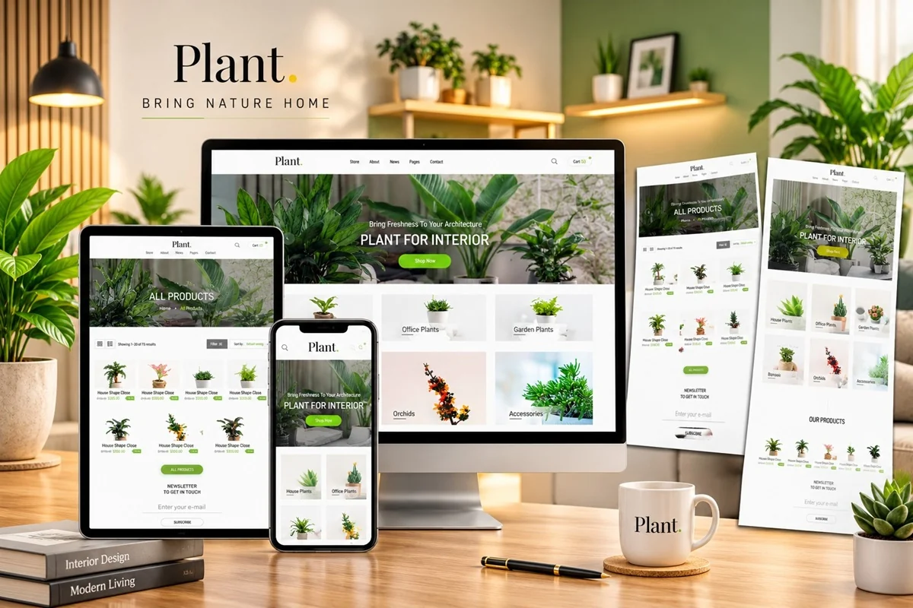
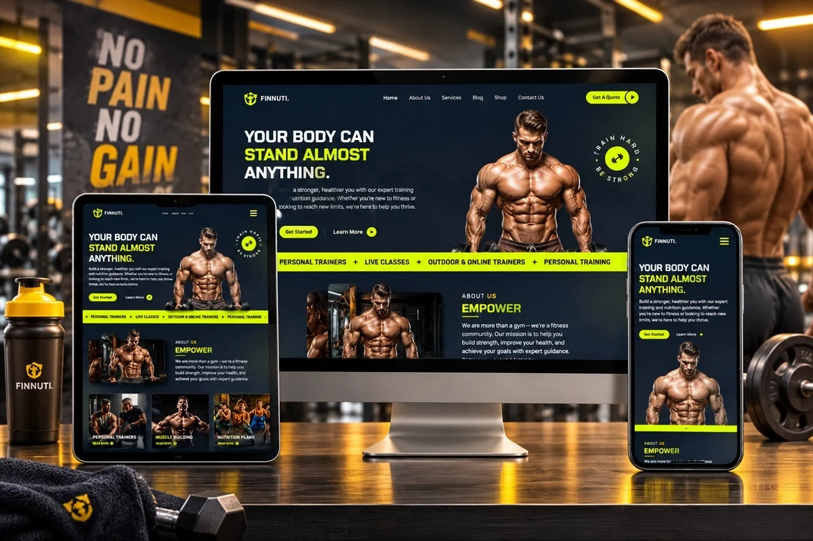
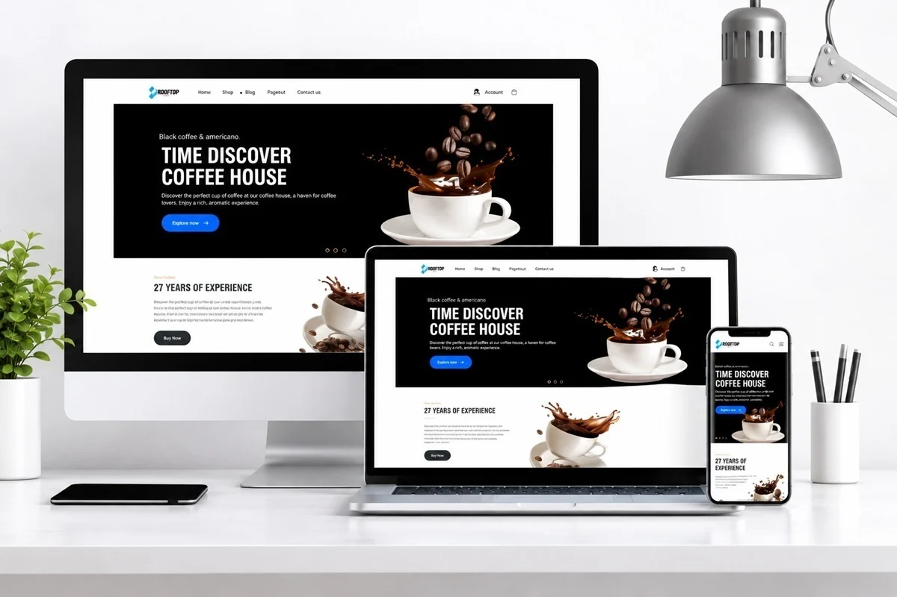
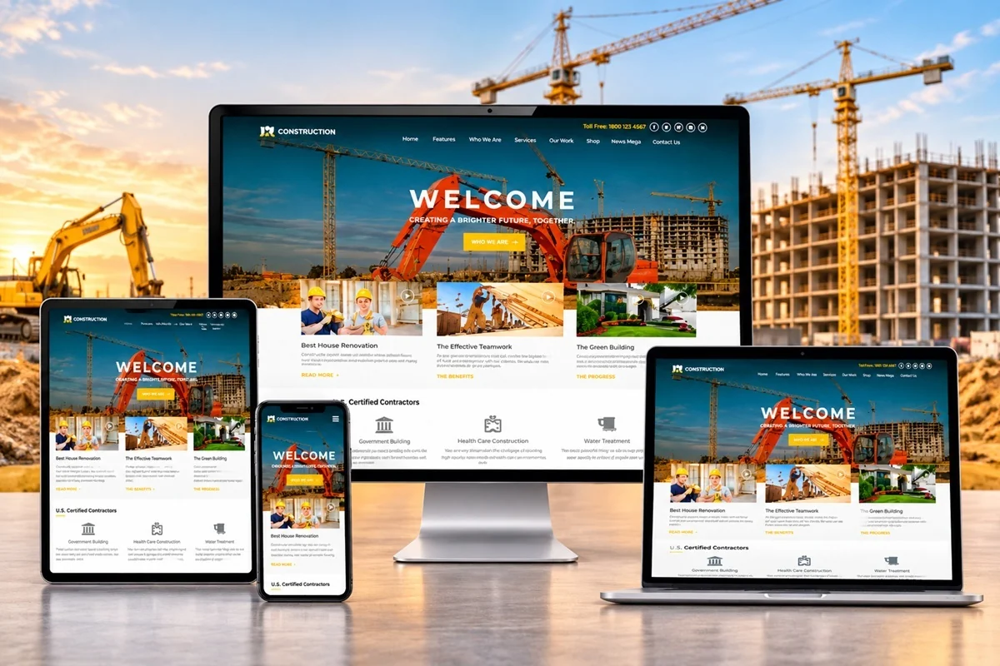
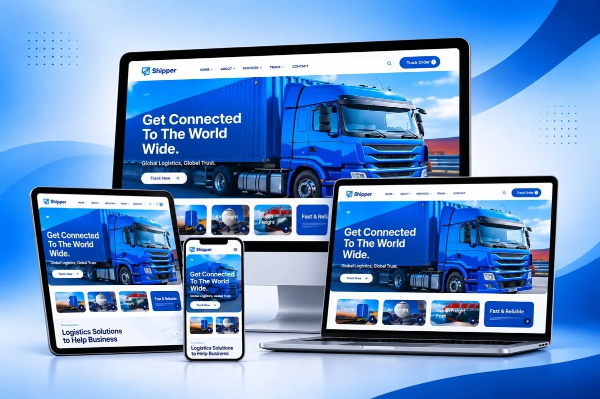

Business Website Development
Professional, responsive websites that communicate your value and help turn visitors into enquiries.
WEB DEVELOPER · WEB DESIGNER · WORDPRESS SPECIALIST
I’m Mohd Jobayer Hossain, a web developer with 5+ years of experience creating responsive websites, thoughtful user experiences and practical e-commerce solutions.
A PRACTICAL CREATIVE PARTNER
I help businesses turn ideas into clear, engaging and reliable web experiences. My work brings together clean design, responsive development and the flexibility of WordPress.
From a business website to a product-focused online store, I pay attention to the details that make a website useful: structure, usability, performance and a smooth experience across devices.
Download my CV ↓SERVICES
A reliable web presence should make it easier for customers to understand your offer, trust your brand and take the next step.
Professional, responsive websites that communicate your value and help turn visitors into enquiries.
Flexible WordPress websites, custom page layouts, theme customization and ongoing improvements.
Product-focused WooCommerce stores with clear shopping journeys and practical store functionality.
Clean interfaces built with HTML, CSS, JavaScript and Bootstrap for mobile, tablet and desktop.
Content updates, troubleshooting and usability improvements to keep your website dependable.
HAVE AN IDEA?
PORTFOLIO
A selection of responsive website design and development concepts across different industries.

↗A fresh, product-led storefront concept for browsing indoor plants, office plants, garden plants and accessories.

↗A bold fitness website concept focused on training services, personal coaching and membership enquiries.

↗A warm, editorial cafe website concept presenting the coffee experience, brand story and key information.

↗A professional company website concept highlighting services, project capabilities and trust-building content.

↗A clear, confident logistics website concept designed to communicate freight services, global reach and shipment tracking.
Project visuals are presented as portfolio showcases. Technologies and live project links can be added or refined for each project when confirmed.
SKILLS & TECHNOLOGIES
I choose practical tools to build maintainable websites and deliver a consistent experience across screen sizes.
PROFESSIONAL EXPERIENCE
Designing and developing responsive business, portfolio and e-commerce websites; customizing WordPress with themes, plugins and Elementor; building WooCommerce stores; and maintaining websites.
Freedom IT Institutions
Freedom IT Institutions
Political Science · Bangladesh Open University
HAVE A PROJECT IN MIND?
Tell me what you're working on. Share your goals, your challenges or even a rough idea. I'll be happy to discuss how I can help.
Email me about your project ↗